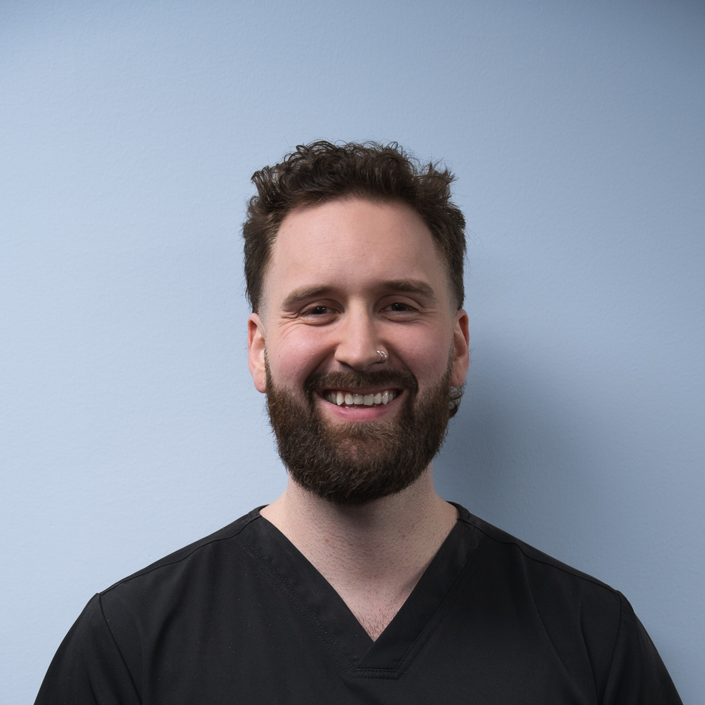
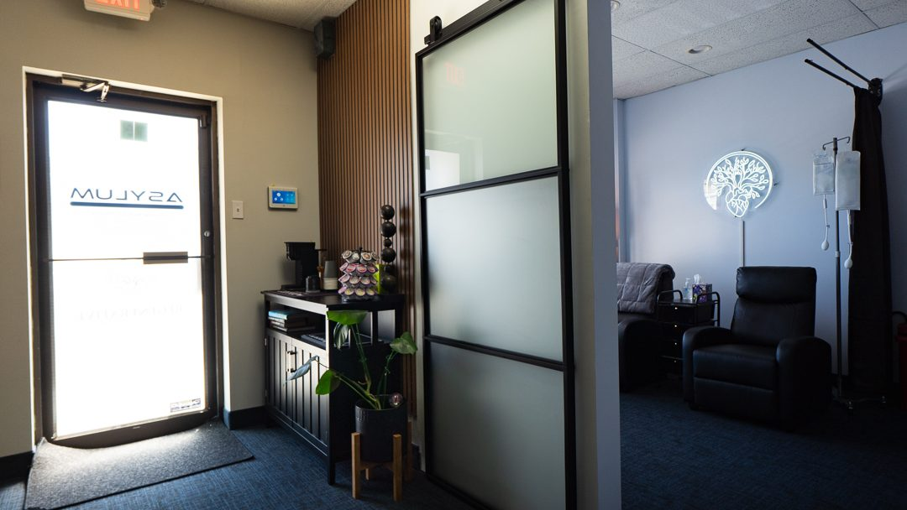
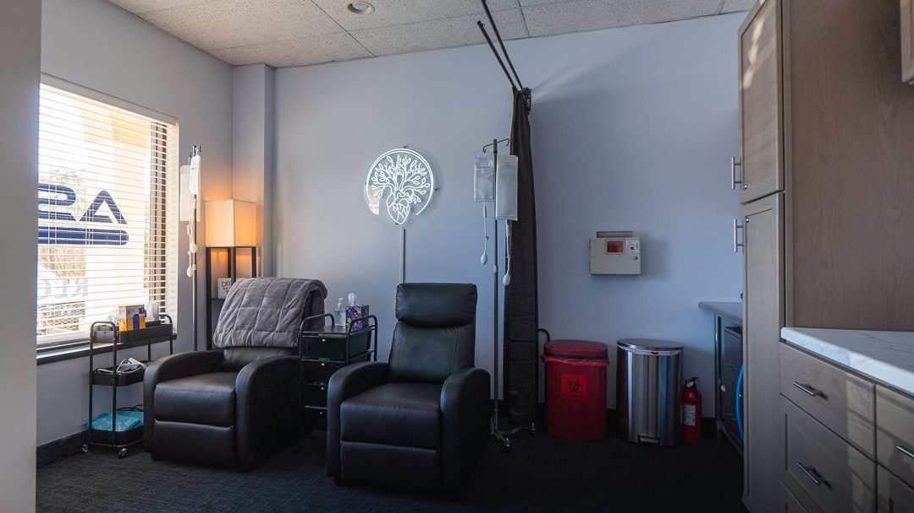
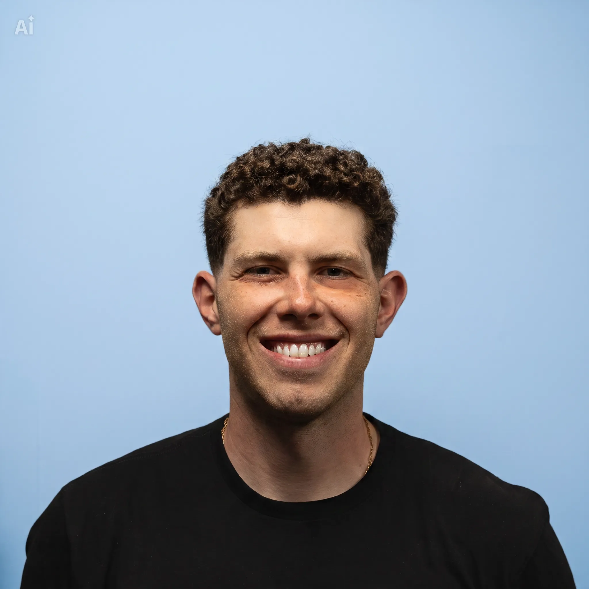
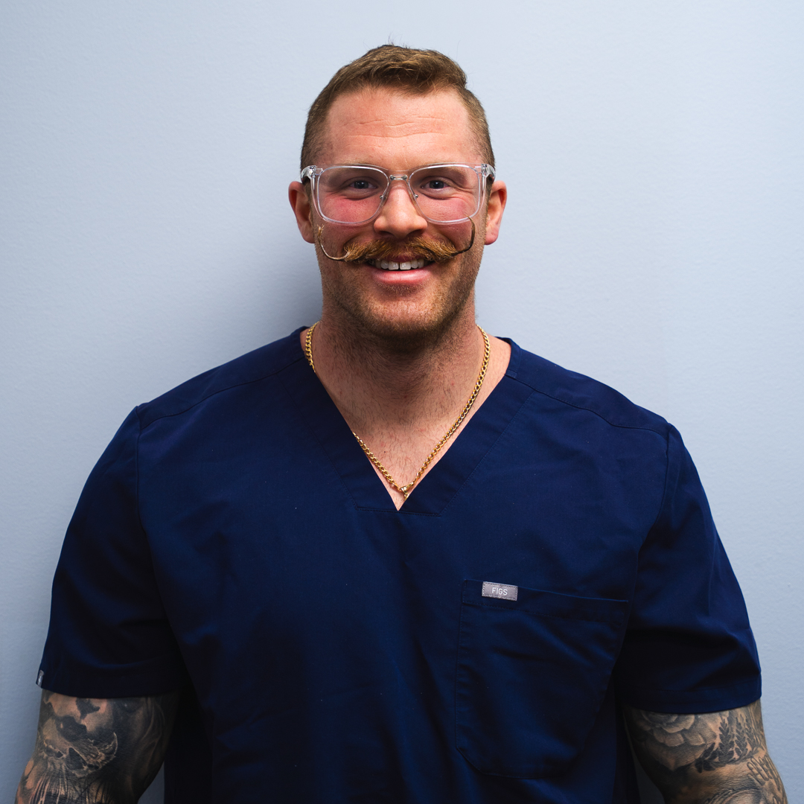
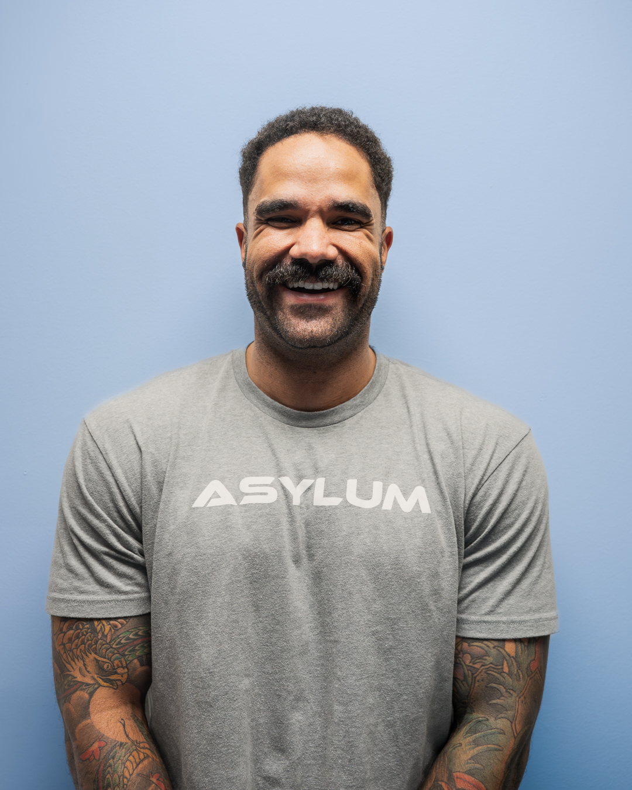
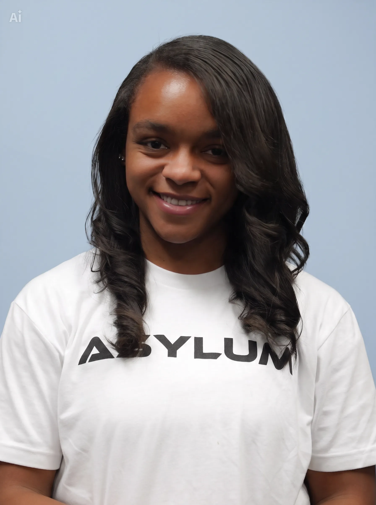
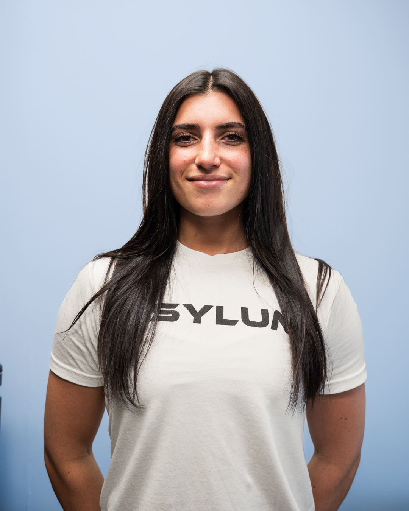
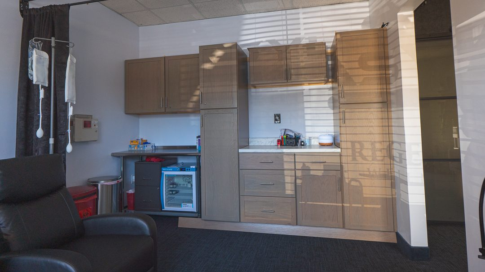

Tyler Fretz
Owner, Wellness & IV / Registered Nurse
Leads Wellness & IV service direction and client experience across IV therapy, lab testing, and coaching.

About Asylum
Three wings, one location, and one belief: your best health starts with real data and a real plan.

Voorhees, NJOur story
Asylum began with a simple idea: the path to feeling and performing your best should not be scattered across five different places. So we put functional wellness, sports recovery, and natural health under one roof in Voorhees, all anchored by lab-based, medically guided care.
Whether you are optimizing for the stage or for the next 40 years, you start with answers and end with a plan.
Our story
Asylum began with Dr. Umar Nisar. Born in Pakistan and raised in South Jersey, he grew up immersed in lifting, wrestling, and soccer, and that relationship with training and recovery shaped how he saw the body. He became a chiropractor, and after a stint in a traditional practice he set out to build something of his own, spending his last dollars on a logo and the deposit on his first unit, and doing home visits to make ends meet while he built a name around South Jersey.
Tyler Fretz came in as one of Dr. Nisar’s clients. During a session, Dr. Nisar pitched him on adding IV therapy, an idea seven or eight other nurses had already passed on. Tyler said yes, and Regenerative Wellness Clinic LLC was formed in October 2024. Together they added lab testing, brought on Nurse Practitioner Jennifer O’Neill, and in November 2025 opened the supplement store as the third wing, led by Collin Fabio.
In March 2026 the whole operation unified under one brand: Asylum Wellness & IV. Today the Wellness & IV, Sports Performance & Recovery, and Natural Health & Supplements wings work as one connected ecosystem, where labs, IVs, coaching, recovery, and supplements build on each other.
Above all, we want clients to feel heard. Not boxed into one path or passed around without answers, but given real options, real direction, and real control over their health, backed by a team that actually knows them.
Meet the team

Owner, Wellness & IV / Registered Nurse
Leads Wellness & IV service direction and client experience across IV therapy, lab testing, and coaching.
Owner, Sports Performance & Recovery / Doctor of Chiropractic
Provides chiropractic and sports recovery sessions and injury-informed personal training, and oversees the performance, recovery, and gym side of the business.

Owner & Operator, Natural Health & Supplements
Runs the supplement store day to day, from product selection and education to the retail experience.
Nurse Practitioner, Wellness & IV
Handles lab ordering and result interpretation, IV therapy clearance, and provider-level clinical support.

Health & Wellness Coach (RN)
A registered nurse on track to become a nurse practitioner. Builds coaching plans, runs weekly check-ins, and guides nutrition, training, and supplementation.
Licensed Acupuncturist
Runs Asylum’s acupuncture services, used mainly for pain and acute injury relief plus recovery and wellness support.

Licensed Massage Therapist
Deep tissue and performance and recovery-focused massage.

Licensed Massage Therapist
Deep tissue and recovery-focused massage therapy.

Certified Personal Trainer (NASM)
Delivers private, customized one-on-one training, and is actively competing toward IFBB Pro bikini status.
Professional headshots can be dropped into assets/img to replace the monogram tiles.
Medical oversight
Asylum Wellness & IV runs under a compliant management services organization and professional corporation model. Regenerative Wellness Clinic LLC, doing business as Asylum Wellness & IV, handles the space, staff, and non-clinical operations, while all medical services are provided by LPMD Health of NJ, PC and delivered under the oversight of our Medical Director, Dr. Laura Purdy, MD. That structure keeps every clinical decision in the hands of licensed medical providers.

Book a visit or reach out with questions. We are happy to walk you through what we do.